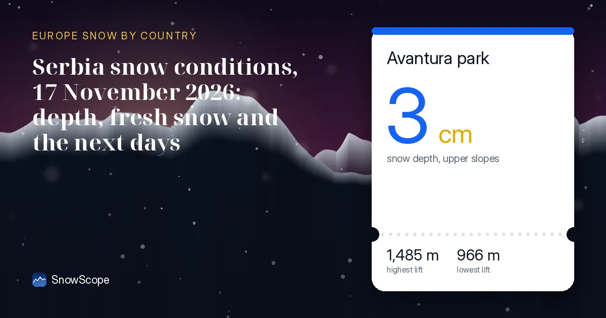

Serbia snow conditions, 17 November 2026: depth, fresh snow and the next days
The white area in Serbia stands at about 30 km² today, little changed from yesterday.
See the live snow forecast for Avantura park in the SnowScope appSnow depth, powder alerts and the 3D map, free.
Snow cover today
No height band is mostly white yet. Over the week the white area has hardly moved from 70 km².
| Resort | Snow depth | New snow, 72 h | Coming, next days | Top |
|---|---|---|---|---|
| Avantura park | 3 cm | 0 cm | 0 cm | 1,485 m |

New snow in the last three days
Hardly any new snow fell in the last three days: the three-day maximum is 0 cm.
Where to ski first
At the top of the list, Avantura park reports 3 cm.
Count 1 white resorts out of 9 in Serbia today.
What it means on the slopes
Little has changed on the ground, so the snow you find today is mostly the snow of the last storm.
Snow on the way?
The week ahead could bring up to 8 cm, 0 cm of it in the next three days.
Monday 23 November stands out, with up to 6 cm in a day.
Tips for skiers
- Early-season snow is thin over rocks: ski the groomed runs first.
- Snow above the tree line can be wind-packed: watch the ridges.
- Fresh snow on a cold base sticks badly: take care on steep slopes.
About these numbers
Resort snow depths are the deepest snow on the resort's upper slopes from the SnowScope snow model (about 1 km, run of 17 November); they are estimates for an area, not a measurement at one point. Station values are measurements on the date shown. Forecasts can change. Always read the official avalanche bulletin before going off-piste.
Cite this report
For research, teaching or the press: the numbers and charts are free to reuse under CC BY 4.0 with this citation.
SnowScope (2026), Serbia snow conditions, 17 November 2026: depth, fresh snow and the next days, https://snowscope.app/blog/en/2026/11/serbia-snow-report-17-november-2026.html, accessed 2026-11-17
SnowScope (Atlas Labs). (2026, November 17). Serbia snow conditions, 17 November 2026: depth, fresh snow and the next days. SnowScope snow reports. https://snowscope.app/blog/en/2026/11/serbia-snow-report-17-november-2026.html
BibTeX
@misc{snowscope2026serbiasnowreport17novemb,
author = {{SnowScope (Atlas Labs)}},
title = {Serbia snow conditions, 17 November 2026: depth, fresh snow and the next days},
year = {2026},
month = nov,
howpublished = {\url{https://snowscope.app/blog/en/2026/11/serbia-snow-report-17-november-2026.html}},
note = {Published 2026-11-17 13:46 UTC; accessed 2026-11-17}
}· CC BY 4.0 · Methods, data and tools →
Avantura park: snow and temperature by height, this winter vs last (tools) →
Follow Avantura park
Free: a message when fresh snow is coming, and the forecast every morning.
More snow reports

Orelle holds 42 cm, close to the typical 53 cm for mid-November. Fresh snow forecast across the Alps over the next three days.

Himalaya snow cover in November 2026 from NASA MODIS: snow on 610,409 km² of ground above 2,000 m between the Hindu Kush and Bhutan, half the clear ground white from about 4,800 m in Nepal and 3,600 m in the Karakoram. The NDSI explained, plus shadows, cloud and the low autumn sun.